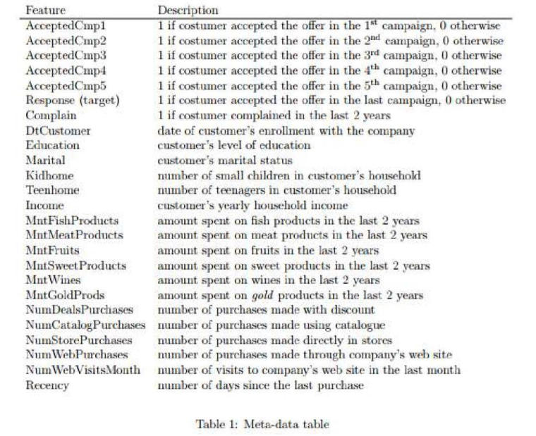

setwd("/Users/zacharyfisher/Dropbox/Macbook/UNC/Teaching/Courses/PSYC559/PSYC559-Site/data")
df <- read.csv("ifood_df.csv")Describing Data Numerically
Numerical Summaries of Data Frames
Once you have read in a data frame it can be useful to know how the variables are understood by R. For example, let’s look at some Kaggle Marketing Analytics Data. You can download the raw data here.

Read in Marketing Data
Let’s read in the data using the read.csv() function.
Install and Load psych Package
Once we know the data has been read into R we can look at how R understands the data file using the structure function str()
str(df)'data.frame': 2205 obs. of 39 variables:
$ Income : num 58138 46344 71613 26646 58293 ...
$ Kidhome : int 0 1 0 1 1 0 0 1 1 1 ...
$ Teenhome : int 0 1 0 0 0 1 1 0 0 1 ...
$ Recency : int 58 38 26 26 94 16 34 32 19 68 ...
$ MntWines : int 635 11 426 11 173 520 235 76 14 28 ...
$ MntFruits : int 88 1 49 4 43 42 65 10 0 0 ...
$ MntMeatProducts : int 546 6 127 20 118 98 164 56 24 6 ...
$ MntFishProducts : int 172 2 111 10 46 0 50 3 3 1 ...
$ MntSweetProducts : int 88 1 21 3 27 42 49 1 3 1 ...
$ MntGoldProds : int 88 6 42 5 15 14 27 23 2 13 ...
$ NumDealsPurchases : int 3 2 1 2 5 2 4 2 1 1 ...
$ NumWebPurchases : int 8 1 8 2 5 6 7 4 3 1 ...
$ NumCatalogPurchases : int 10 1 2 0 3 4 3 0 0 0 ...
$ NumStorePurchases : int 4 2 10 4 6 10 7 4 2 0 ...
$ NumWebVisitsMonth : int 7 5 4 6 5 6 6 8 9 20 ...
$ AcceptedCmp3 : int 0 0 0 0 0 0 0 0 0 1 ...
$ AcceptedCmp4 : int 0 0 0 0 0 0 0 0 0 0 ...
$ AcceptedCmp5 : int 0 0 0 0 0 0 0 0 0 0 ...
$ AcceptedCmp1 : int 0 0 0 0 0 0 0 0 0 0 ...
$ AcceptedCmp2 : int 0 0 0 0 0 0 0 0 0 0 ...
$ Complain : int 0 0 0 0 0 0 0 0 0 0 ...
$ Z_CostContact : int 3 3 3 3 3 3 3 3 3 3 ...
$ Z_Revenue : int 11 11 11 11 11 11 11 11 11 11 ...
$ Response : int 1 0 0 0 0 0 0 0 1 0 ...
$ Age : int 63 66 55 36 39 53 49 35 46 70 ...
$ Customer_Days : int 2822 2272 2471 2298 2320 2452 2752 2576 2547 2267 ...
$ marital_Divorced : int 0 0 0 0 0 0 1 0 0 0 ...
$ marital_Married : int 0 0 0 0 1 0 0 1 0 0 ...
$ marital_Single : int 1 1 0 0 0 0 0 0 0 0 ...
$ marital_Together : int 0 0 1 1 0 1 0 0 1 1 ...
$ marital_Widow : int 0 0 0 0 0 0 0 0 0 0 ...
$ education_2n.Cycle : int 0 0 0 0 0 0 0 0 0 0 ...
$ education_Basic : int 0 0 0 0 0 0 0 0 0 0 ...
$ education_Graduation: int 1 1 1 1 0 0 1 0 0 0 ...
$ education_Master : int 0 0 0 0 0 1 0 0 0 0 ...
$ education_PhD : int 0 0 0 0 1 0 0 1 1 1 ...
$ MntTotal : int 1529 21 734 48 407 702 563 146 44 36 ...
$ MntRegularProds : int 1441 15 692 43 392 688 536 123 42 23 ...
$ AcceptedCmpOverall : int 0 0 0 0 0 0 0 0 0 1 ...The psych package in R provides some useful function for describing data. Let’s install psyc, load the package, and look at our data.
install.packages("psych") # install the packagelibrary("psych") # load the libraryDescribe the Data
Now let’s use the describe() function from psych to look at our marketing data.
describe(df) # describe our marketing data vars n mean sd median trimmed mad min
Income 1 2205 51622.09 20713.06 51287 51625.17 24408.04 1730
Kidhome 2 2205 0.44 0.54 0 0.40 0.00 0
Teenhome 3 2205 0.51 0.54 0 0.48 0.00 0
Recency 4 2205 49.01 28.93 49 49.00 37.06 0
MntWines 5 2205 306.16 337.49 178 251.45 249.08 0
MntFruits 6 2205 26.40 39.78 8 17.12 11.86 0
MntMeatProducts 7 2205 165.31 217.78 68 119.54 88.96 0
MntFishProducts 8 2205 37.76 54.82 12 25.31 17.79 0
MntSweetProducts 9 2205 27.13 41.13 8 17.48 11.86 0
MntGoldProds 10 2205 44.06 51.74 25 33.57 28.17 0
NumDealsPurchases 11 2205 2.32 1.89 2 1.97 1.48 0
NumWebPurchases 12 2205 4.10 2.74 4 3.83 2.97 0
NumCatalogPurchases 13 2205 2.65 2.80 2 2.22 2.97 0
NumStorePurchases 14 2205 5.82 3.24 5 5.52 2.97 0
NumWebVisitsMonth 15 2205 5.34 2.41 6 5.41 2.97 0
AcceptedCmp3 16 2205 0.07 0.26 0 0.00 0.00 0
AcceptedCmp4 17 2205 0.07 0.26 0 0.00 0.00 0
AcceptedCmp5 18 2205 0.07 0.26 0 0.00 0.00 0
AcceptedCmp1 19 2205 0.06 0.25 0 0.00 0.00 0
AcceptedCmp2 20 2205 0.01 0.12 0 0.00 0.00 0
Complain 21 2205 0.01 0.09 0 0.00 0.00 0
Z_CostContact 22 2205 3.00 0.00 3 3.00 0.00 3
Z_Revenue 23 2205 11.00 0.00 11 11.00 0.00 11
Response 24 2205 0.15 0.36 0 0.06 0.00 0
Age 25 2205 51.10 11.71 50 51.04 13.34 24
Customer_Days 26 2205 2512.72 202.56 2515 2513.15 259.46 2159
marital_Divorced 27 2205 0.10 0.31 0 0.01 0.00 0
marital_Married 28 2205 0.39 0.49 0 0.36 0.00 0
marital_Single 29 2205 0.22 0.41 0 0.15 0.00 0
marital_Together 30 2205 0.26 0.44 0 0.20 0.00 0
marital_Widow 31 2205 0.03 0.18 0 0.00 0.00 0
education_2n.Cycle 32 2205 0.09 0.29 0 0.00 0.00 0
education_Basic 33 2205 0.02 0.15 0 0.00 0.00 0
education_Graduation 34 2205 0.50 0.50 1 0.51 0.00 0
education_Master 35 2205 0.17 0.37 0 0.08 0.00 0
education_PhD 36 2205 0.22 0.41 0 0.15 0.00 0
MntTotal 37 2205 562.76 575.94 343 482.34 459.61 4
MntRegularProds 38 2205 518.71 553.85 288 436.84 400.30 -283
AcceptedCmpOverall 39 2205 0.30 0.68 0 0.13 0.00 0
max range skew kurtosis se
Income 113734 112004 0.01 -0.85 441.10
Kidhome 2 2 0.63 -0.79 0.01
Teenhome 2 2 0.40 -0.99 0.01
Recency 99 99 0.00 -1.20 0.62
MntWines 1493 1493 1.17 0.57 7.19
MntFruits 199 199 2.10 4.03 0.85
MntMeatProducts 1725 1725 1.82 3.23 4.64
MntFishProducts 259 259 1.91 3.04 1.17
MntSweetProducts 262 262 2.10 4.06 0.88
MntGoldProds 321 321 1.83 3.13 1.10
NumDealsPurchases 15 15 2.31 8.16 0.04
NumWebPurchases 27 27 1.20 4.08 0.06
NumCatalogPurchases 28 28 1.37 3.19 0.06
NumStorePurchases 13 13 0.71 -0.64 0.07
NumWebVisitsMonth 20 20 0.23 1.89 0.05
AcceptedCmp3 1 1 3.25 8.60 0.01
AcceptedCmp4 1 1 3.24 8.52 0.01
AcceptedCmp5 1 1 3.28 8.76 0.01
AcceptedCmp1 1 1 3.55 10.58 0.01
AcceptedCmp2 1 1 8.39 68.45 0.00
Complain 1 1 10.35 105.16 0.00
Z_CostContact 3 0 NaN NaN 0.00
Z_Revenue 11 0 NaN NaN 0.00
Response 1 1 1.95 1.80 0.01
Age 80 56 0.09 -0.80 0.25
Customer_Days 2858 699 -0.02 -1.20 4.31
marital_Divorced 1 1 2.59 4.70 0.01
marital_Married 1 1 0.46 -1.79 0.01
marital_Single 1 1 1.38 -0.10 0.01
marital_Together 1 1 1.11 -0.77 0.01
marital_Widow 1 1 5.10 24.02 0.00
education_2n.Cycle 1 1 2.87 6.23 0.01
education_Basic 1 1 6.15 35.82 0.00
education_Graduation 1 1 -0.02 -2.00 0.01
education_Master 1 1 1.80 1.25 0.01
education_PhD 1 1 1.38 -0.09 0.01
MntTotal 2491 2487 0.91 -0.22 12.27
MntRegularProds 2458 2741 0.98 -0.06 11.79
AcceptedCmpOverall 4 4 2.72 7.94 0.01Describe the Data by Group
We may also be interested in describing the data based on a specific grouping factor. For example, let’s look at our summaries based on whether or not a customer has lodged a formal complaint.
describeBy(df, group = "Complain") # describe our marketing data
Descriptive statistics by group
Complain: 0
vars n mean sd median trimmed mad min
Income 1 2185 51676.55 20719.18 51369 51687.17 24529.62 1730
Kidhome 2 2185 0.44 0.54 0 0.40 0.00 0
Teenhome 3 2185 0.51 0.54 0 0.48 0.00 0
Recency 4 2185 48.99 28.95 49 48.98 37.06 0
MntWines 5 2185 307.35 338.23 179 252.68 250.56 0
MntFruits 6 2185 26.42 39.80 8 17.13 11.86 0
MntMeatProducts 7 2185 165.75 218.21 68 119.91 88.96 0
MntFishProducts 8 2185 37.86 54.95 12 25.37 17.79 0
MntSweetProducts 9 2185 27.21 41.21 8 17.55 11.86 0
MntGoldProds 10 2185 44.21 51.81 25 33.74 28.17 0
NumDealsPurchases 11 2185 2.32 1.89 2 1.96 1.48 0
NumWebPurchases 12 2185 4.10 2.74 4 3.83 2.97 0
NumCatalogPurchases 13 2185 2.65 2.80 2 2.22 2.97 0
NumStorePurchases 14 2185 5.83 3.24 5 5.52 2.97 0
NumWebVisitsMonth 15 2185 5.33 2.41 6 5.41 2.97 0
AcceptedCmp3 16 2185 0.07 0.26 0 0.00 0.00 0
AcceptedCmp4 17 2185 0.08 0.26 0 0.00 0.00 0
AcceptedCmp5 18 2185 0.07 0.26 0 0.00 0.00 0
AcceptedCmp1 19 2185 0.06 0.25 0 0.00 0.00 0
AcceptedCmp2 20 2185 0.01 0.12 0 0.00 0.00 0
Complain 21 2185 0.00 0.00 0 0.00 0.00 0
Z_CostContact 22 2185 3.00 0.00 3 3.00 0.00 3
Z_Revenue 23 2185 11.00 0.00 11 11.00 0.00 11
Response 24 2185 0.15 0.36 0 0.06 0.00 0
Age 25 2185 51.09 11.68 50 51.03 13.34 24
Customer_Days 26 2185 2512.02 202.56 2514 2512.30 257.97 2159
marital_Divorced 27 2185 0.10 0.31 0 0.01 0.00 0
marital_Married 28 2185 0.39 0.49 0 0.36 0.00 0
marital_Single 29 2185 0.22 0.41 0 0.14 0.00 0
marital_Together 30 2185 0.26 0.44 0 0.20 0.00 0
marital_Widow 31 2185 0.03 0.18 0 0.00 0.00 0
education_2n.Cycle 32 2185 0.09 0.29 0 0.00 0.00 0
education_Basic 33 2185 0.02 0.16 0 0.00 0.00 0
education_Graduation 34 2185 0.50 0.50 1 0.50 0.00 0
education_Master 35 2185 0.17 0.37 0 0.08 0.00 0
education_PhD 36 2185 0.22 0.41 0 0.15 0.00 0
MntTotal 37 2185 564.58 576.90 344 484.26 461.09 4
MntRegularProds 38 2185 520.37 554.76 288 438.58 400.30 -283
AcceptedCmpOverall 39 2185 0.30 0.68 0 0.14 0.00 0
max range skew kurtosis se
Income 113734 112004 0.01 -0.85 443.25
Kidhome 2 2 0.64 -0.79 0.01
Teenhome 2 2 0.40 -1.00 0.01
Recency 99 99 0.00 -1.20 0.62
MntWines 1493 1493 1.16 0.55 7.24
MntFruits 199 199 2.10 4.05 0.85
MntMeatProducts 1725 1725 1.81 3.22 4.67
MntFishProducts 259 259 1.91 3.03 1.18
MntSweetProducts 262 262 2.09 4.05 0.88
MntGoldProds 321 321 1.83 3.11 1.11
NumDealsPurchases 15 15 2.31 8.15 0.04
NumWebPurchases 27 27 1.20 4.13 0.06
NumCatalogPurchases 28 28 1.37 3.22 0.06
NumStorePurchases 13 13 0.70 -0.64 0.07
NumWebVisitsMonth 20 20 0.24 1.92 0.05
AcceptedCmp3 1 1 3.26 8.64 0.01
AcceptedCmp4 1 1 3.22 8.39 0.01
AcceptedCmp5 1 1 3.27 8.72 0.01
AcceptedCmp1 1 1 3.53 10.44 0.01
AcceptedCmp2 1 1 8.35 67.78 0.00
Complain 0 0 NaN NaN 0.00
Z_CostContact 3 0 NaN NaN 0.00
Z_Revenue 11 0 NaN NaN 0.00
Response 1 1 1.95 1.79 0.01
Age 80 56 0.09 -0.80 0.25
Customer_Days 2858 699 -0.01 -1.20 4.33
marital_Divorced 1 1 2.58 4.65 0.01
marital_Married 1 1 0.46 -1.79 0.01
marital_Single 1 1 1.38 -0.09 0.01
marital_Together 1 1 1.11 -0.77 0.01
marital_Widow 1 1 5.07 23.76 0.00
education_2n.Cycle 1 1 2.88 6.29 0.01
education_Basic 1 1 6.12 35.45 0.00
education_Graduation 1 1 -0.01 -2.00 0.01
education_Master 1 1 1.80 1.23 0.01
education_PhD 1 1 1.37 -0.12 0.01
MntTotal 2491 2487 0.91 -0.23 12.34
MntRegularProds 2458 2741 0.98 -0.07 11.87
AcceptedCmpOverall 4 4 2.71 7.91 0.01
------------------------------------------------------------
Complain: 1
vars n mean sd median trimmed mad min
Income 1 20 45672.40 19618.60 39341.0 44737.81 22307.94 15716
Kidhome 2 20 0.65 0.59 1.0 0.62 0.00 0
Teenhome 3 20 0.55 0.60 0.5 0.50 0.74 0
Recency 4 20 50.75 27.20 48.5 50.62 28.17 8
MntWines 5 20 176.70 211.11 34.0 147.88 48.18 1
MntFruits 6 20 25.10 39.13 6.0 16.31 8.90 0
MntMeatProducts 7 20 117.70 162.23 32.5 85.00 45.96 1
MntFishProducts 8 20 26.70 38.73 6.5 20.50 9.64 0
MntSweetProducts 9 20 18.20 31.36 4.5 11.19 5.93 0
MntGoldProds 10 20 27.60 40.93 13.5 18.00 12.60 2
NumDealsPurchases 11 20 2.40 1.43 2.0 2.19 1.48 1
NumWebPurchases 12 20 3.70 2.96 3.0 3.31 2.22 0
NumCatalogPurchases 13 20 2.10 2.90 0.5 1.56 0.74 0
NumStorePurchases 14 20 5.40 3.60 3.5 4.94 2.22 2
NumWebVisitsMonth 15 20 5.85 2.41 7.0 6.06 1.48 1
AcceptedCmp3 16 20 0.10 0.31 0.0 0.00 0.00 0
AcceptedCmp4 17 20 0.00 0.00 0.0 0.00 0.00 0
AcceptedCmp5 18 20 0.05 0.22 0.0 0.00 0.00 0
AcceptedCmp1 19 20 0.00 0.00 0.0 0.00 0.00 0
AcceptedCmp2 20 20 0.00 0.00 0.0 0.00 0.00 0
Complain 21 20 1.00 0.00 1.0 1.00 0.00 1
Z_CostContact 22 20 3.00 0.00 3.0 3.00 0.00 3
Z_Revenue 23 20 11.00 0.00 11.0 11.00 0.00 11
Response 24 20 0.15 0.37 0.0 0.06 0.00 0
Age 25 20 51.65 15.04 50.0 51.81 17.79 25
Customer_Days 26 20 2588.70 193.28 2685.0 2602.06 164.57 2250
marital_Divorced 27 20 0.05 0.22 0.0 0.00 0.00 0
marital_Married 28 20 0.40 0.50 0.0 0.38 0.00 0
marital_Single 29 20 0.30 0.47 0.0 0.25 0.00 0
marital_Together 30 20 0.25 0.44 0.0 0.19 0.00 0
marital_Widow 31 20 0.00 0.00 0.0 0.00 0.00 0
education_2n.Cycle 32 20 0.15 0.37 0.0 0.06 0.00 0
education_Basic 33 20 0.00 0.00 0.0 0.00 0.00 0
education_Graduation 34 20 0.70 0.47 1.0 0.75 0.00 0
education_Master 35 20 0.10 0.31 0.0 0.00 0.00 0
education_PhD 36 20 0.05 0.22 0.0 0.00 0.00 0
MntTotal 37 20 364.40 424.05 77.5 300.19 101.56 9
MntRegularProds 38 20 336.80 414.50 63.5 271.94 84.51 0
AcceptedCmpOverall 39 20 0.15 0.49 0.0 0.00 0.00 0
max range skew kurtosis se
Income 83257 67541 0.35 -0.97 4386.85
Kidhome 2 2 0.18 -0.93 0.13
Teenhome 2 2 0.50 -0.87 0.14
Recency 93 85 0.11 -1.28 6.08
MntWines 629 628 0.84 -0.88 47.21
MntFruits 137 137 1.58 1.39 8.75
MntMeatProducts 590 589 1.58 1.50 36.28
MntFishProducts 104 104 1.05 -0.69 8.66
MntSweetProducts 107 107 1.74 1.58 7.01
MntGoldProds 176 174 2.48 5.90 9.15
NumDealsPurchases 7 6 1.48 2.74 0.32
NumWebPurchases 11 11 1.01 -0.07 0.66
NumCatalogPurchases 10 10 1.25 0.52 0.65
NumStorePurchases 13 11 0.87 -0.81 0.81
NumWebVisitsMonth 9 8 -0.67 -1.02 0.54
AcceptedCmp3 1 1 2.47 4.32 0.07
AcceptedCmp4 0 0 NaN NaN 0.00
AcceptedCmp5 1 1 3.82 13.29 0.05
AcceptedCmp1 0 0 NaN NaN 0.00
AcceptedCmp2 0 0 NaN NaN 0.00
Complain 1 0 NaN NaN 0.00
Z_CostContact 3 0 NaN NaN 0.00
Z_Revenue 11 0 NaN NaN 0.00
Response 1 1 1.82 1.37 0.08
Age 77 52 -0.02 -1.46 3.36
Customer_Days 2823 573 -0.49 -1.30 43.22
marital_Divorced 1 1 3.82 13.29 0.05
marital_Married 1 1 0.38 -1.95 0.11
marital_Single 1 1 0.81 -1.41 0.11
marital_Together 1 1 1.07 -0.89 0.10
marital_Widow 0 0 NaN NaN 0.00
education_2n.Cycle 1 1 1.82 1.37 0.08
education_Basic 0 0 NaN NaN 0.00
education_Graduation 1 1 -0.81 -1.41 0.11
education_Master 1 1 2.47 4.32 0.07
education_PhD 1 1 3.82 13.29 0.05
MntTotal 1298 1289 0.85 -0.73 94.82
MntRegularProds 1231 1231 0.90 -0.72 92.68
AcceptedCmpOverall 2 2 2.94 7.68 0.11